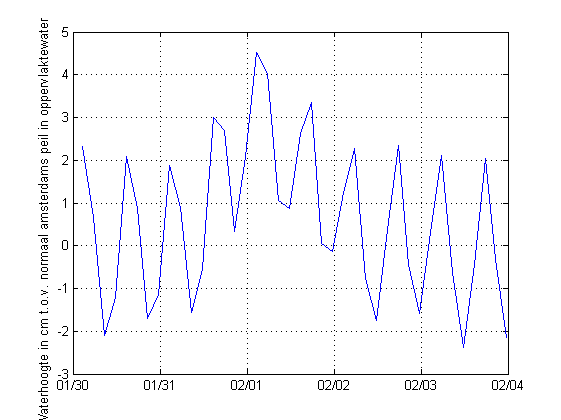
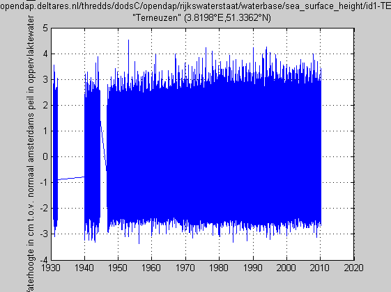

Contents
- NC_CF_STATIONTIMESERIES_TUTORIAL how to read and subset a netCDF time series file
- subset > 100 year Rijkswaterstaat time series at Hoek van Holland
- Determine indices of subset based on the the subregion you want
- Because the time series is rather big, getting the full time vector to determine
- get subset
- plot
- This 15 Mb dataset could also be loaded as a whole at once using a dedicated function
NC_CF_STATIONTIMESERIES_TUTORIAL how to read and subset a netCDF time series file
%See also: SNCTOOLS, NC_CF_STATIONTIMESERIES,... % NC_CF_GRID_TUTORIAL,... % NC_CF_STATIONTIMESERIES_WRITE_TUTORIAL
subset > 100 year Rijkswaterstaat time series at Hoek van Holland
The full timeseries (15MB) is a bit slow to handle via OPeNDAP.
D.url = 'http://opendap.deltares.nl/thredds/dodsC/opendap/rijkswaterstaat/waterbase/sea_surface_height/id1-TERNZN.nc';
nc_dump(D.url)
URL http://opendap.deltares.nl/thredds/dodsC/opendap/rijkswaterstaat/waterbase/sea_surface_height/id1-TERNZN.nc {
dimensions:
locations = 1 ;
name_strlen1 = 6 ;
name_strlen2 = 9 ;
time = 1452014 ;
variables:
// Preference 'PRESERVE_FVD': false,
// dimensions consistent with ncBrowse, not with native MATLAB netcdf package.
char station_id(locations,name_strlen1), shape = [1 6]
station_id:long_name = "station identification code"
station_id:standard_name = "station_id"
...Determine indices of subset based on the the subregion you want
OPT.datenum = datenum(1953,1,30 + [0 5]);% datestr(OPT.datenum)
Because the time series is rather big, getting the full time vector to determine
the indices we want takes rather long. Get full coordinate sticks
D.datenum = nc_cf_time(D.url,'time'); ind.datenum = find(D.datenum > OPT.datenum(1) & D.datenum < OPT.datenum(2)); D.datenum = D.datenum(ind.datenum);
In fact, this approach gets already 50% of the whole file. Therefore we made a special query function that downloads only the times you need without downloading the whole time vector.
[D.datenum,start,count] = nc_varget_range(D.url,'time',OPT.datenum);
get subset
note: nc_varget is zero-based note: the 1D timeseries has two dimensions, 1st dimension is dummy
D.z = nc_varget(D.url,'sea_surface_height' ,[0 start],[1 count]); M.z.units = nc_attget(D.url,'sea_surface_height','units'); M.z.long_name = nc_attget(D.url,'sea_surface_height','long_name');
plot
plot(D.datenum,D.z); datetick('x') grid on ylabel([M.z.long_name,' [',M.z.units,']']) print('-dpng',['Hoek_van_Holland_time_',datestr(OPT.datenum(1)),'_',datestr(OPT.datenum(2))])
This 15 Mb dataset could also be loaded as a whole at once using a dedicated function
figure nc_cf_stationtimeseries(D.url,'sea_surface_height','plot',1);
Warning: Could not find an exact (case-sensitive) match for 'nc_cf_stationtimeseries'.
F:\checkouts\OpenEarthTools\matlab\io\netcdf\nctools\nc_cf_stationTimeSeries.m is a
case-insensitive match and will be used instead.
You can improve the performance of your code by using exact
name matches and we therefore recommend that you update your
usage accordingly. Alternatively, you can disable this warning using
warning('off','MATLAB:dispatcher:InexactCaseMatch').
This warning will become an error in future releases.
